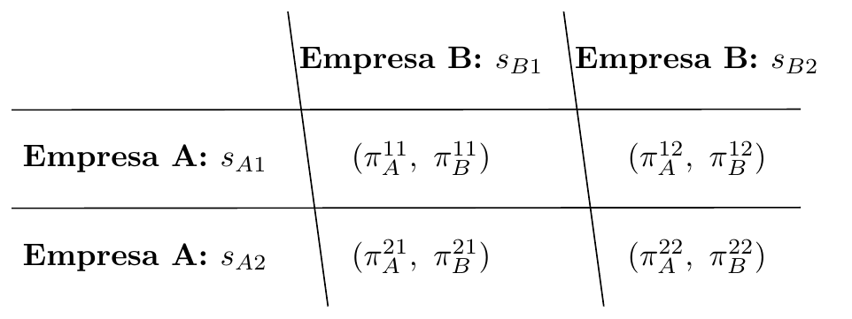
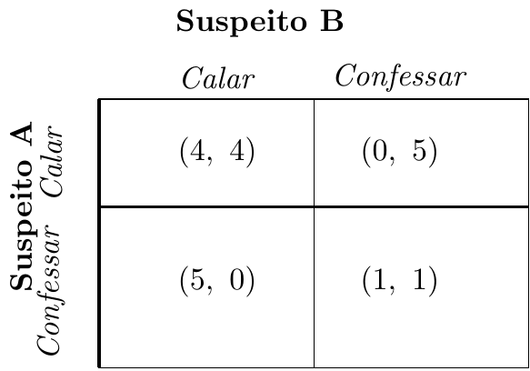
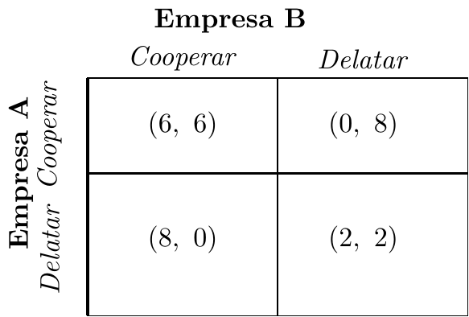
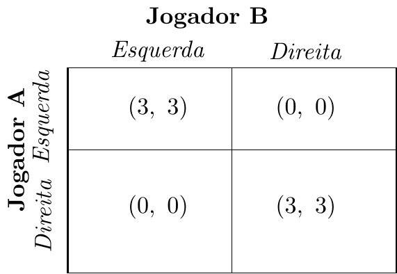
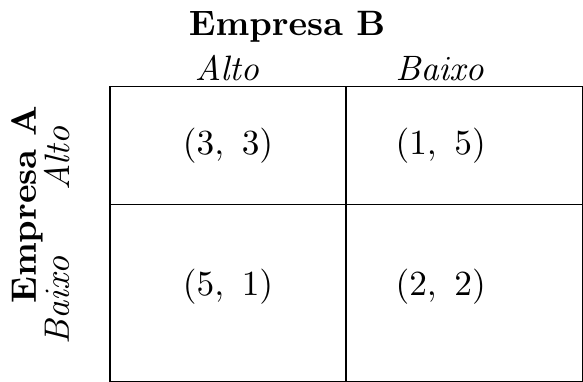
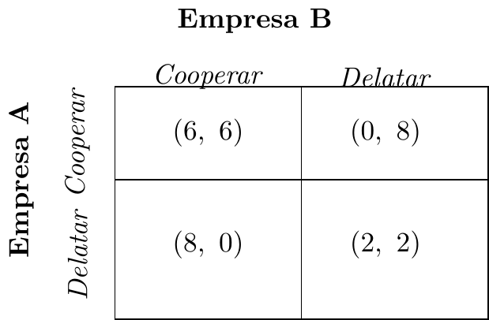

Microeconomia
Aula 22 — Introdução à Teoria de Jogos
1 O que é um Jogo?
1.1 Porque precisamos de Teoria de Jogos?
Até agora, cada decisor foi analisado em isolamento:
- O consumidor maximiza utilidade dado um preço que não controla
- A empresa em CP escolhe \(Q\) dado um preço de mercado
- O monopolista optimiza face a uma curva de procura passiva
. . .
Mas e quando o resultado de cada agente depende das escolhas dos outros?
. . .
Important
Em oligopólio, duas ou três empresas controlam o mercado. A decisão de uma afecta directamente o lucro das outras. Cada empresa precisa de antecipar o comportamento das rivais — e elas sabem disso.
A teoria de jogos é a ferramenta adequada para analisar estas situações de interdependência estratégica.
1.2 Os Elementos de um Jogo
Todo o jogo em forma normal é definido por três elementos:
. . .
1. Jogadores — quem decide? (\(i = 1, 2, \ldots, n\))
. . .
2. Estratégias — que acções estão disponíveis a cada jogador?
\[S_i = \{s_{i1},\ s_{i2},\ \ldots\}\]
. . .
3. Payoffs — que resultado obtém cada jogador para cada combinação de estratégias?
\[\pi_i(s_1, s_2, \ldots, s_n)\]
. . .
Note
O payoff pode representar lucro, utilidade, anos de prisão evitados, ou qualquer medida de bem-estar relevante. A teoria é geral — o conteúdo depende da aplicação.
1.3 Forma Normal: A Matriz de Payoffs
Com dois jogadores e duas estratégias cada, o jogo representa-se numa matriz \(2\times2\):
. . .
. . .
Convenção: cada célula mostra \((\pi_A,\ \pi_B)\) — primeiro o payoff da empresa que escolhe a linha, segundo o da coluna.
2 Conceitos Fundamentais
2.1 Dominância Estrita
Note
Definição: A estratégia \(s_i\) domina estritamente \(s_i'\) se, independentemente do que os outros jogadores fizerem, \(s_i\) dá sempre um payoff estritamente superior a \(s_i'\).
. . .
Se existe uma estratégia dominante para um jogador, um agente racional nunca escolhe a estratégia dominada — independentemente das suas crenças sobre os rivais.
. . .
Eliminação iterada de estratégias dominadas:
- Eliminar as estratégias estritamente dominadas de cada jogador
- Repetir com a matriz reduzida
- Continuar até não haver mais eliminações
. . .
Se este processo conduz a uma única célula, temos um equilíbrio em estratégias dominantes.
2.2 Equilíbrio de Nash
Important
Definição (John Nash, 1950): Um perfil de estratégias \((s_1^*, s_2^*, \ldots, s_n^*)\) é um Equilíbrio de Nash se nenhum jogador tem incentivo a desviar-se unilateralmente, dado que os outros mantêm as suas estratégias.
. . .
Formalmente, para cada jogador \(i\):
\[\pi_i(s_i^*,\ s_{-i}^*) \geq \pi_i(s_i,\ s_{-i}^*) \quad \forall s_i\]
onde \(s_{-i}^*\) denota as estratégias de todos os outros jogadores.
. . .
Note
O Equilíbrio de Nash é um conceito de consistência mútua: cada jogador está a fazer o melhor que pode dado o que os outros estão a fazer. Ninguém se arrepende da sua escolha a posteriori.
2.3 Nash vs. Óptimo Colectivo
Um Equilíbrio de Nash não é necessariamente o melhor resultado colectivo:
. . .
- O EN é estável do ponto de vista individual — ninguém quer desviar sozinho
- Mas pode existir outro resultado em que todos ficariam melhor
- Esse resultado não é sustentável sem coordenação ou compromisso vinculativo
. . .
Esta tensão entre racionalidade individual e óptimo colectivo é o coração do Dilema do Prisioneiro.
3 O Dilema do Prisioneiro
3.1 A História Original
Dois suspeitos são detidos e interrogados separadamente. Cada um pode:
- Calar (cooperar com o cúmplice)
- Confessar (delatar o cúmplice)
. . .

(payoffs = anos de prisão evitados — maior é melhor)
3.2 Análise: Dominância e Nash
Raciocínio de A:
- Se B calar: A obtém \(5\) (confessar) vs \(4\) (calar) \(\Rightarrow\) Confessar
- Se B confessar: A obtém \(1\) (confessar) vs \(0\) (calar) \(\Rightarrow\) Confessar
. . .
Confessar domina estritamente Calar — para A. Pelo mesmo raciocínio, também para B.
. . .
Equilíbrio de Nash: (Confessar, Confessar) = (1, 1)
. . .
Important
Mas (Calar, Calar) = (4, 4) é Pareto superior — ambos ficariam melhor se calassem. O problema: nenhum consegue credibilmente comprometer-se a calar sem que o outro aproveite para confessar.
A racionalidade individual leva a um resultado colectivamente mau.
3.3 Aplicação: Delação Premiada em Cartéis
O dilema do prisioneiro tem uma aplicação directa à política de concorrência:
. . .
Duas empresas num cartel podem:
- Cooperar — manter o acordo de cartel, partilhar lucros de monopólio
- Delatar — informar a autoridade da concorrência, obtendo imunidade ou redução de coima
. . .

(payoffs em milhares de euros de lucro líquido)
3.4 Análise da Delação Premiada
Dominância de Delatar:
- Se B cooperar: A obtém \(8\) (delatar) vs \(6\) (cooperar) \(\Rightarrow\) Delatar
- Se B delatar: A obtém \(2\) (delatar) vs \(0\) (cooperar) \(\Rightarrow\) Delatar
. . .
Equilíbrio de Nash: (Delatar, Delatar) = (2, 2)
Resultado colectivamente inferior a (Cooperar, Cooperar) = (6, 6).
. . .
Tip
Lógica da política de leniência: os reguladores exploram exactamente esta estrutura. Ao oferecer imunidade total ao primeiro a delatar, tornam a delação ainda mais atractiva — o equilíbrio de Nash desloca-se para (Delatar, Delatar) de forma ainda mais robusta.
Os cartéis são instáveis precisamente porque cada membro tem incentivo a trair os parceiros.
4 Outros Tipos de Jogos
4.1 Jogos de Coordenação
Nem todos os jogos têm a estrutura problemática do dilema do prisioneiro:
. . .

(Exemplo: lados de circulação no trânsito)
. . .
Dois Equilíbrios de Nash: (Esq, Esq) e (Dir, Dir). Aqui o problema não é a traição — é a coordenação: ambos querem fazer o mesmo, mas qual?
4.2 Resumo: Conceitos-Chave
| Conceito | Definição em síntese |
|---|---|
| Estratégia dominante | Melhor resposta independentemente do rival |
| Estratégia dominada | Nunca é a melhor resposta — racional eliminá-la |
| Equilíbrio de Nash | Ninguém quer desviar unilateralmente |
| Dilema do Prisioneiro | EN existe mas é Pareto inferior — racionalidade individual \(\neq\) óptimo colectivo |
| Jogo de coordenação | Múltiplos EN — o problema é coordenar, não trair |
. . .
Note
Na próxima aula aplicamos estes conceitos ao oligopólio: o modelo de Cournot é precisamente um jogo em que cada empresa escolhe quantidade tomando a rival como dado — e o equilíbrio de Nash em quantidades é o resultado central.
5 Exercícios
5.1 Exercício 1 — Escolha Múltipla
Considere a seguinte matriz de payoffs \((\pi_A,\ \pi_B)\):

O Equilíbrio de Nash desta matriz é:
- (Alto, Alto) = (3, 3)
- (Alto, Baixo) = (1, 5)
- (Baixo, Baixo) = (2, 2)
- Não existe Equilíbrio de Nash
5.2 Solução — Exercício 1
A: Se B=Alto: \(5 > 3\) → Baixo. Se B=Baixo: \(2 > 1\) → Baixo. Baixo domina.
B: Se A=Alto: \(5 > 3\) → Baixo. Se A=Baixo: \(2 > 1\) → Baixo. Baixo domina.
Nash: (Baixo, Baixo) = (2, 2) — nenhum quer desviar unilateralmente.
Note: (Alto, Alto) = (3, 3) é Pareto superior mas não é EN — cada um tem incentivo a desviar para Baixo.
Resposta: (c)
5.3 Exercício 2 — Escolha Múltipla
No Dilema do Prisioneiro, o Equilíbrio de Nash é:
- O resultado que maximiza a soma dos payoffs dos dois jogadores
- O resultado em que nenhum jogador quer desviar, mesmo que seja Pareto inferior
- Sempre o resultado em que ambos cooperam
- O resultado que só é atingível com comunicação entre os jogadores
5.4 Solução — Exercício 2
- Falso — o EN do DP é (Confessar, Confessar) que minimiza a soma dos payoffs
- (b) Verdadeiro — o EN é estável individualmente (ninguém quer desviar sozinho) mesmo sendo Pareto inferior a (Calar, Calar)
- Falso — no DP o EN é precisamente a não-cooperação
- Falso — o EN existe sem comunicação; com comunicação vinculativa o resultado poderia mudar, mas o EN em si não requer comunicação
Resposta: (b)
5.5 Exercício de Desenvolvimento
Duas empresas, A e B, participavam num cartel ilegal. A autoridade da concorrência abre uma investigação e contacta cada empresa separadamente, oferecendo imunidade total à primeira a colaborar.
Cada empresa pode Cooperar (manter silêncio) ou Delatar (colaborar com a autoridade).
Os payoffs (lucro líquido esperado, em milhares de euros) são:

- Mostre que Delatar é uma estratégia estritamente dominante para a Empresa A.
- Identifique o Equilíbrio de Nash. Qual o payoff de cada empresa?
- Qual o resultado colectivamente óptimo? Compare com o EN.
- Explique por que razão a política de leniência é eficaz para desmantelar cartéis.
5.6 Solução — Exercício de Desenvolvimento
a) Verificação da dominância de Delatar para A:
- Se B Cooperar: A obtém \(8\) (Delatar) \(>\) \(6\) (Cooperar) \(\Rightarrow\) Delatar
- Se B Delatar: A obtém \(2\) (Delatar) \(>\) \(0\) (Cooperar) \(\Rightarrow\) Delatar
Delatar é estritamente dominante — A prefere Delatar independentemente da escolha de B. ✓
. . .
b) Pelo mesmo raciocínio (o jogo é simétrico), Delatar também domina para B.
Equilíbrio de Nash: (Delatar, Delatar) = (2, 2)
Nenhuma empresa quer desviar: se A está a delatar, B obtém \(2\) (delatar) \(>\) \(0\) (cooperar). ✓
. . .
c) O resultado colectivamente óptimo é (Cooperar, Cooperar) = (6, 6) — soma de payoffs \(12 > 4\).
Mas não é sustentável: qualquer empresa tem incentivo a desviar unilateralmente para Delatar e obter \(8\) em vez de \(6\).
. . .
d) A política de leniência reforça exactamente esta estrutura. Ao garantir imunidade ao primeiro a delatar, o regulador torna o payoff de Delatar ainda mais atractivo. Cada empresa sabe que a rival tem incentivo a delatar primeiro — o que acelera a delação mútua. O cartel dissolve-se pela mesma lógica do dilema do prisioneiro: a racionalidade individual destrói a colusão colectiva.